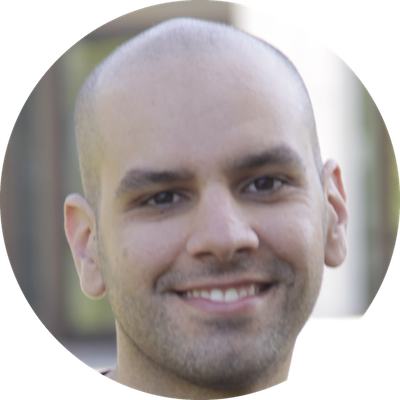

Leandro Facchinetti

YouTube:
Streams about code & audio production every weekday at 17:30 UTC
GitHub:
Open-source projects on web development & audio production
Patreon:
Ongoing support
PayPal:
One-time support
GitHub Sponsors:
Yet another way to support
Résumé:
A bit about me
Curriculum Vitæ:
A lot about me
Email